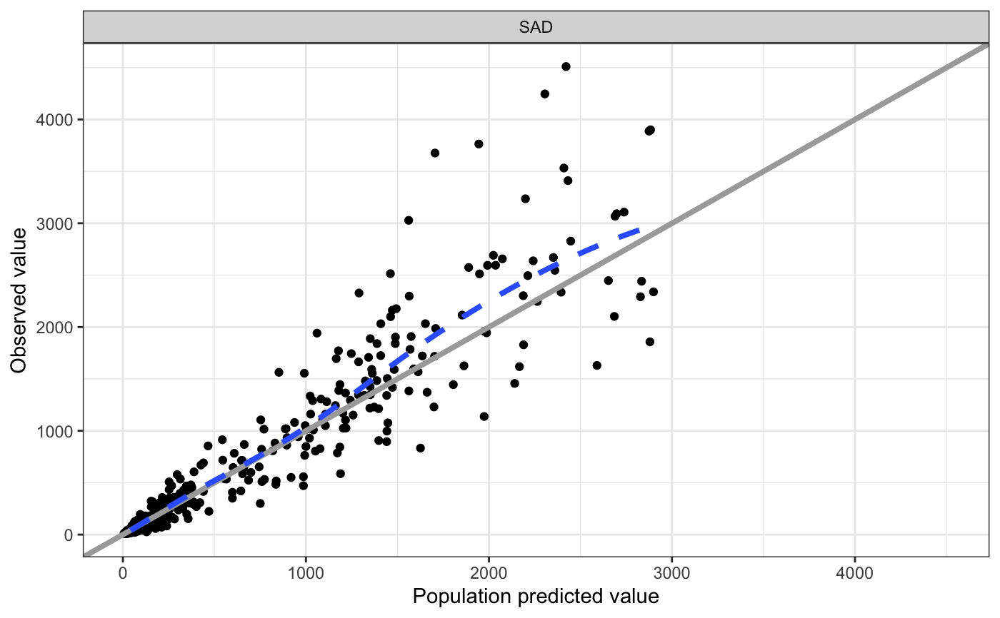
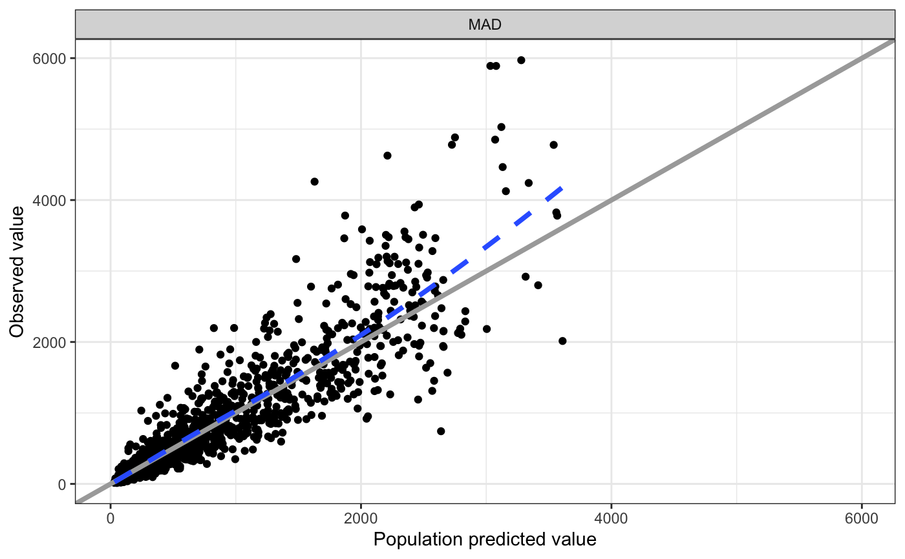
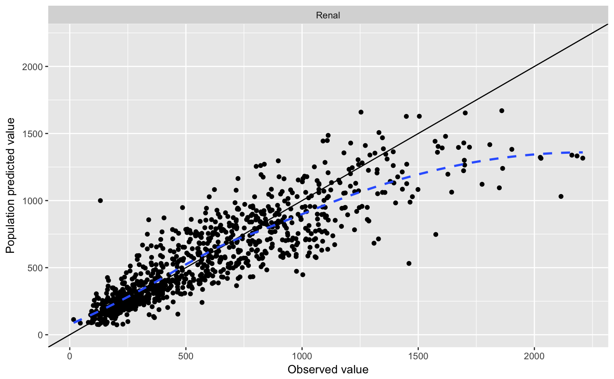
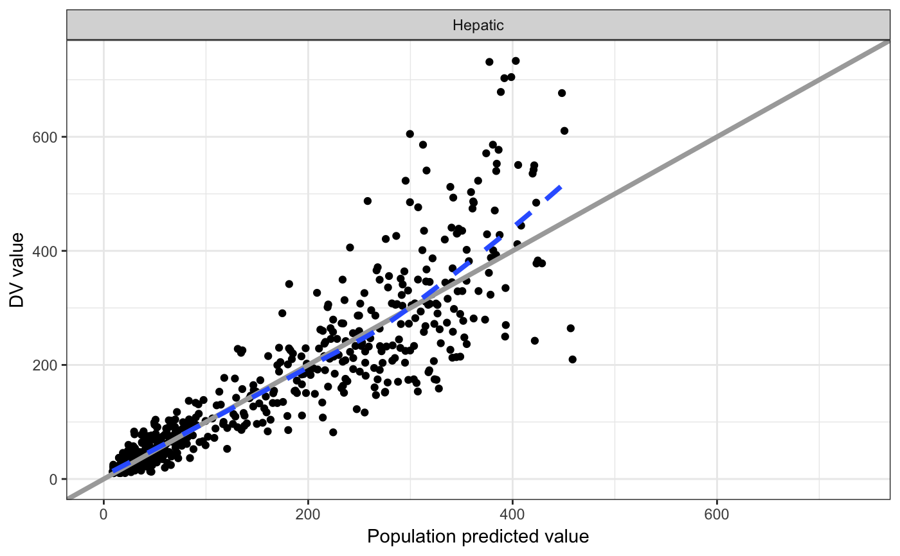

split_plot(df, fun, sp = get_split_col(df), ...)
Arguments
| df |
data frame to split and plot |
| fun |
function to use to plot |
| sp |
character name of column to split; if df is a
grouped data frame, leave this argument missing and the; regardless
of how this is specified, sp should name a single column
split column will be determined from the groups |
| ... |
passed to fun |
Value
A list of plots.
Examples
#> Loading required package: dplyr
#>
#> Attaching package: ‘dplyr’
#> The following object is masked from ‘package:testthat’:
#>
#> matches
#> The following objects are masked from ‘package:stats’:
#>
#> filter, lag
#> The following objects are masked from ‘package:base’:
#>
#> intersect, setdiff, setequal, union
#> $SAD
#> Warning: Removed 1 rows containing missing values (geom_smooth).

#>
#> $MAD

#>
#> $Renal

#>
#> $Hepatic

#>